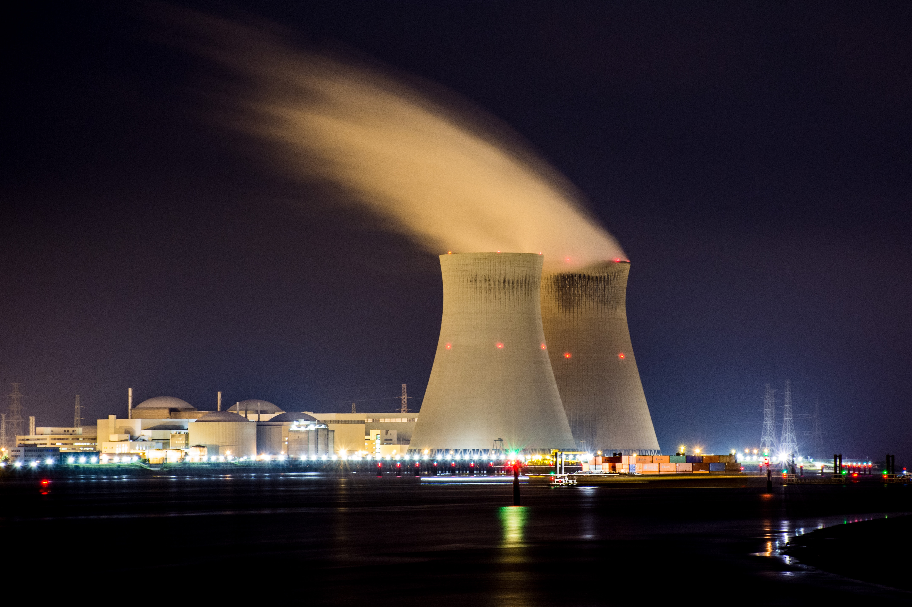

Nuclear Technology
The history of nuclear technology dates back to the early 20th century, with the discovery of the atomic nucleus and the principles of nuclear physics. In the 1930s, scientists began to realize the potential of nuclear fission, which could release a tremendous amount of energy from a small amount of matter.
During World War II, nuclear technology played a crucial role in the development of the atomic bomb, which was used to end the war in the Pacific. After the war, nuclear power was seen as a promising source of energy, with the first commercial nuclear power plant opening in the United States in 1957.
However, the development of nuclear technology has also raised concerns about safety and security. Accidents at nuclear power plants, such as the Chernobyl disaster in 1986 and the Fukushima disaster in 2011, have highlighted the risks associated with nuclear technology. Additionally, the proliferation of nuclear weapons remains a major global security concern.
Despite these challenges, nuclear technology continues to play an important role in many areas, including energy production, medical imaging, and scientific research. Ongoing research and development in nuclear technology are focused on improving safety, reducing waste, and developing new applications for this powerful technology.
Nuclear technology refers to the various technologies and systems used to harness the energy released by nuclear reactions. This includes the design, construction, and operation of nuclear reactors, as well as the development and implementation of nuclear fuel cycles, nuclear waste management systems, and radiation protection measures.
Nuclear technology is primarily used for the generation of electricity, with nuclear power plants accounting for a significant portion of the world's energy supply. It is also used in other applications such as medical imaging and cancer treatment, industrial applications, and scientific research. While nuclear technology has the potential to provide significant benefits, it also carries risks, including the possibility of nuclear accidents and the proliferation of nuclear weapons. As a result, the development and use of nuclear technology is subject to strict regulations and safety standards.